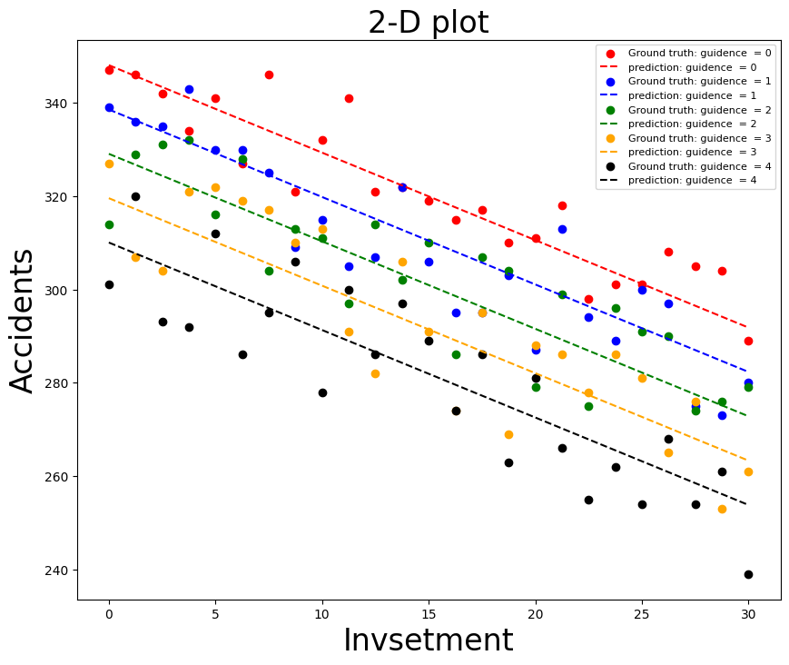

ביחידה 4 חזינו משכורת משנות לימוד — משתנה מסביר אחד, קו אחד. אבל העולם האמיתי מרובה סיבות: תאונות במפעל תלויות גם בהדרכות הבטיחות, גם בהשקעה במכונות, וגם באיזה מפעל מדובר. היחידה הזאת עונה על שלוש שאלות: איך מכניסים כמה משתנים למודל אחד (כולל קטגוריות כמו "עיר"), איך מדרגים מי מהם הכי משפיע, ומה נשבר כשהמשתנים תלויים זה בזה.
הדוגמה שתלווה אותנו לכל אורך היחידה — היא מהשיעור, והיא אמיתית עד הפרט האחרון: מפעל מתכות עם 125 תצפיות משלוש ערים, ובגרף התלת-ממדי האינטראקטיבי למטה תוכל לסובב אותה בעצמך.
5.1 המודל המרובה — ממקו למישור
הנתונים: לכל חודש-מפעל נמדדו שעות הדרכת בטיחות (0–4), השקעה בבטיחות מכונות (0–30 אלפי דולר), ומספר התאונות. המודל:
📐 רגרסיה מרובה
$$\hat{Y}=\hat{b}_0+\hat{b}_1X_1+\hat{b}_2X_2 \qquad\Rightarrow\qquad \widehat{תאונות}=348.08-9.51\cdot הדרכה-1.88\cdot השקעה$$
פענוח: אותה תבנית מיחידה 4, רק עם עוד איברים. גיאומטרית: מסביר אחד = קו, שניים = מישור בתלת-ממד, שלושה ומעלה = אי אפשר לצייר (אבל האלגברה עובדת אותו דבר). מספר הפרמטרים במודל עם חותך: מספר המשתנים + 1.
💡 הפירוש הנכון של מקדם — המשפט ששווה נקודות 📓 תוכן מקובץ סיכום
המרצה ציין במפורש ששאלת "מה אומר המקדם של X בפלט" היא שאלת מבחן פוטנציאלית. הנוסח המלא: "על כל שעת הדרכה נוספת, מספר התאונות יורד בממוצע ב-9.5 — בהינתן ששאר המשתנים קבועים". שלוש המילים האחרונות (ceteris paribus) הן ההבדל בין רגרסיה פשוטה למרובה: המקדם מודד את התרומה של המשתנה בנטרול כל השאר. בלעדיהן — התשובה חסרה.
🔎 ומה משמעות החותך כשיש כמה משתנים? 📓 תוכן מקובץ סיכום
שאלה שנשאלה בכיתה. תשובה: הערך של Y כאשר כל המשתנים המסבירים שווים אפס — כאן: 348 תאונות בחודש בלי שום הדרכה ובלי שום השקעה. ותובנה חשובה מהמרצה: רגרסיה היא מודל מתמטי שלא "מפעיל היגיון" — היא תחזיר חיזוי גם לקלט שלא ייתכן לוגית (כמו "אדם בגובה 0"). האחריות על ההיגיון היא שלנו.
✏️ חיזוי — בדיוק כמו ביחידה 4, רק וקטור ארוך יותר
כמה תאונות צפויות עם 20 שעות הדרכה ו-10 אלפי דולר השקעה?
\(\hat{Y}=348.079-9.508\times 20-1.876\times 10=139.16\). בקוד: results.predict(np.array([[1, 20, 10]])) — וכרגיל, לא לשכוח את ה-1 של החותך בתחילת הווקטור.
🎯 בסגנון שאלת מבחן שהמרצה הזכיר📓 תוכן מקובץ סיכום
במודל התאונות, מה הפירוש המלא של המקדם −1.88 של ההשקעה?
💬 ברגרסיה מרובה כל מקדם הוא "בהינתן שאר המשתנים קבועים" — בלי התוספת הזאת התשובה נחשבת חסרה. והאופציה האחרונה היא מלכודת שנפוצץ בסעיף 5.5: מקדם גולמי קטן ≠ השפעה קטנה, כי היחידות שונות (אלפי דולר מול שעות!).
5.2 קריאת הפלט — עכשיו עם יותר שורות
הפלט של statsmodels למודל הזה (R²=0.858, F=368.1, n=125):
coef
t
P>|t|
[0.025
0.975]
intercept
348.0794
182.0
0.000
344.3
351.9
guidence
-9.5080
-16.89
0.000
-10.62
-8.39
invsetment
-1.8757
-21.24
0.000
-2.05
-1.70
הכל בדיוק כמו ביחידה 4, רק שעכשיו יש מבחן t נפרד לכל משתנה: כל שורה בודקת \(H_0: b_i=0\) — "האם המשתנה הזה בכלל תורם, בהינתן שכל השאר כבר במודל?". כאן כל ה-p-values הם 0.000 — כולם נשארים. וכלל העבודה מהשיעור: משתנה שלא מובהק ⇐ מוציאים אותו ומריצים מודל חדש.
(אגב השמות המשובשים — guidence ו-invsetment — אלו שגיאות כתיב שקיימות בדאטה המקורי של הקורס. אם תתקן אותן הקוד שלך יקרוס... נשארנו נאמנים למקור 😄)
5.3 לראות את זה — המישור בתלת-ממד 🎛️
הגיע הרגע שהבטחתי: הנתונים האמיתיים מהשיעור (כל 125 התצפיות, חולצו מקובץ הנתונים המקורי) בתלת-ממד אינטראקטיבי. סובב עם האצבע או העכבר, וגלה בעצמך למה משתני דמה משנים את התמונה:
🎛️ מגרש משחקים: מהנקודות אל המישורים
התחל מהנקודות בלבד וסובב — רואה ששלושת הצבעים (מפעלים) חיים בגבהים שונים? עכשיו עבור למודל הבסיסי וראה איך מישור אחד מנסה לפשר בין כולם, ואז למודל עם הדמה — שלושה מישורים מקבילים.
🔎 איך בכלל מציירים מישור? (meshgrid מהשיעור)
כדי לצייר משטח, המחשב צריך רשת של נקודות: np.meshgrid לוקח שני וקטורים (למשל ערכי הדרכה וערכי השקעה) ו"פורש" מהם את כל השילובים האפשריים — רשת דו-ממדית. על כל נקודת רשת מחשבים \(Z=b_0+b_1X+b_2Y\), ומקבלים את המישור. כך בדיוק צויר הגרף בהרצאה (ההוא עם צבעי ה-cividis).
ובהצגה דו-ממדית מהשיעור — תאונות מול השקעה, קו לכל רמת הדרכה:

מהשיעור: חיזויי המודל הבסיסי — חמישה קווים מקבילים (אחד לכל רמת הדרכה 0–4). למה מקבילים? כי במודל בלי אינטראקציות, ההשפעה של השקעה זהה בכל רמת הדרכה. תזכור את המילה "מקבילים" — היא הלב של יחידה 6.🔎 שאלה מהכיתה: למה אחרי הוספת הדמה הקווים כבר לא ישרים? 📓 תוכן מקובץ סיכום
כשמציירים את חיזויי מודל-הדמה על אותו גרף (תאונות מול השקעה, צבע = רמת הדרכה), הקווים יוצאים משוננים — קופצים למעלה ולמטה. הסיבה: כל "קו" צבעוני מערבב נקודות משלוש ערים שונות, ולכל עיר חותך אחר. הפרדה מלאה הייתה דורשת 3 ערים × 5 רמות הדרכה = 15 קווים. המודל עדיין לגמרי לינארי — רק הציור מערבב קבוצות.
5.4 משתני דמה — איך מכניסים "עיר" למשוואה
יש לנו משתנה רביעי: Factory — אריאל / חיפה / ירושלים. אבל רגרסיה אוכלת רק מספרים. אז מה, נקודד אריאל=1, חיפה=2, ירושלים=3?
⚠️ קידוד אורדינלי לקטגוריות בלי סדר — טעות! 📓 תוכן מקובץ סיכום
אם נקודד ערים כ-1/2/3, המודל "יבין" שירושלים (3) היא פי 3 אריאל (1), ושחיפה נמצאת "באמצע" ביניהן — שטויות, אין שום סדר טבעי בין ערים. קידוד מספרי רציף מתאים רק לקטגוריות עם סדר אמיתי (קטן/בינוני/גדול).
הפתרון: One-Hot Encoding — עמודת "מתג" 0/1 לכל קטגוריה (pd.get_dummies). אבל למודל מכניסים רק k−1 עמודות:
📐 המודל עם משתני דמה
$$\hat{Y}=\hat{b}_0+\hat{b}_1X_1+\hat{b}_2X_2+\hat{d}_1D_{Ariel}+\hat{d}_2D_{Haifa}$$
$$\widehat{תאונות}=360.54-10.02\cdot הדרכה-1.98\cdot השקעה-11.61\cdot D_{אריאל}-21.69\cdot D_{חיפה}$$
פענוח: \(D_{Ariel}\) = 1 אם התצפית מאריאל, אחרת 0 (וכנ"ל חיפה). ואיפה ירושלים? היא קטגוריית הבסיס: כששני המתגים כבויים (\(D_1=D_2=0\)) — זו ירושלים. המקדם \(d_1=-11.61\) אומר: באריאל יש בממוצע 11.6 תאונות פחות מבירושלים, באותן שעות הדרכה ואותה השקעה.
💡 למה רק k−1 עמודות? מלכודת משתני הדמה 📓 תוכן מקובץ סיכום
שאלה שנשאלה בכיתה: "למה לא להוסיף גם D₃ לירושלים?" שתי תשובות: 1) היא מיותרת — אם לא אריאל ולא חיפה, בהכרח ירושלים; העמודה השלישית לא מוסיפה שום מידע. 2) היא מזיקה — שלוש העמודות מסתכמות תמיד ל-1, שזו בדיוק עמודת החותך ⇐ תלות לינארית מושלמת ⇐ המודל קורס (זו המולטיקוליניאריות של סעיף 5.6). לכן: k קטגוריות ⇐ k−1 עמודות דמה, תמיד.
והתוצאה? R² קפץ מ-0.858 ל-0.993 — המיקום הסביר כמעט את כל הרעש שנשאר. גיאומטרית: במקום מישור אחד, שלושה מישורים מקבילים — הדמה מזיז את הגובה (החותך), לא את השיפועים. ראית את זה בתלת-ממד למעלה; עכשיו נבין את זה ב-2D, בדיוק במבנה של שאלה 1 במבחן:
🎛️ מגרש משחקים: משתני דמה = קווים מקבילים
שלוש קטגוריות, קו אחד לכל אחת. הזז את הסליידרים של d₂ ו-d₃ (המקדמים של הדמה) וצפה: הקווים רק עולים ויורדים — לעולם לא משנים שיפוע. המספרים על ציר Y הם החיתוכים ב-X=0 — בדיוק מה ששאלה 1 במבחן נותנת לך.
🎯 שאלה 1 מהמבחן לדוגמא
התאמה לינארית ל-3 קטגוריות עם משתנה מסביר אחד: \(y=b_0+b_1x+d_2D_2+d_3D_3\), כשקטגוריה 1 היא הבסיס. נתון שכאשר X=0: קטגוריה 1 → 30.114, קטגוריה 2 → 39.806, קטגוריה 3 → 25.065 (בגרף: שלושה קווים מקבילים). מהו הערך של d₂? ענה למטה — ואם אתה תקוע, לחץ על הכפתור בווידג'ט למעלה.
🎯 שאלה 1 מהמבחן לדוגמא
מהו הערך של d₂?
💬 כש-X=0, הקו של הבסיס נמצא ב-\(b_0=30.114\) והקו של קטגוריה 2 ב-\(b_0+d_2=39.806\). לכן \(d_2=39.806-30.114=9.69\) — מקדם דמה = ההפרש האנכי מקו הבסיס. והמסיח ג (−5.04)? זה בערך \(d_3\): \(25.065-30.114=-5.049\) (המבחן עיגל ל-−5.04) — מי שהתבלבל בין הקטגוריות נפל שם.
שאלה שנשאלה בכיתה📓 תוכן מקובץ סיכום
מפלט המודל (עם ירושלים כבסיס) עולה שמקדמי אריאל וחיפה מובהקים. אילו זוגות ערים אפשר לקבוע שהם שונים מובהקות זה מזה? 1. אריאל–חיפה 2. ירושלים–חיפה 3. ירושלים–אריאל
💬 מבחני ה-t בפלט משווים כל דמה רק לקטגוריית הבסיס (ירושלים). על אריאל מול חיפה לא בוצע שום מבחן! ההפרש בין המקדמים (כ-10) הוא אומדן טוב להפרש ביניהן — אבל בלי מבחן אין קביעת מובהקות. (איך כן בודקים? מבחן על צירוף מקדמים, או פשוט להריץ מחדש עם אריאל כבסיס.)
5.5 מקדמים מתוקננים — מי באמת המשפיע הגדול?
שאלה טבעית: איזה משתנה הכי משפיע על התאונות? מבט נאיבי במקדמים הגולמיים אומר: הדרכה (−10.02) "גדולה" פי 5 מהשקעה (−1.98). אבל רגע — הדרכה נמדדת בשעות והשקעה באלפי דולרים. להשוות אותם ישירות זה כמו להשוות 5 ק"ג עם 5 ק"מ!
📐 המקדם המתוקנן (Standardized Coefficient)
$$\beta_i^{std}=\hat{b}_i\cdot\frac{s_{X_i}}{s_Y}$$
פענוח: לוקחים את המקדם הגולמי \(\hat{b}_i\) ומכפילים ביחס סטיות התקן — של המשתנה המסביר חלקי של המוסבר. התוצאה עונה על שאלה הוגנת ואחידה: בכמה סטיות תקן של Y ישתנה Y, כשהמשתנה המסביר זז סטיית תקן אחת (ושאר המשתנים קבועים). סטיית תקן היא "מטבע אוניברסלי" (תקנון — יחידה 1!), אז עכשיו כולם מדברים באותה שפה. 📓 תוכן מקובץ סיכום הערת המרצה: סטיות התקן בנוסחה הן בעצמן אומדים מהמדגם.
✏️ הדירוג מהשיעור — והתהפוכה
משתנה
מקדם גולמי
מקדם מתוקנן
דירוג השפעה
השקעה
-1.98
-0.765
🥇 1
הדרכה
-10.02
-0.607
🥈 2
חיפה
-21.69
-0.410
🥉 3
אריאל
-11.61
-0.239
4
שים לב להיפוך המלא: לפי המקדמים הגולמיים חיפה (−21.7) "הכי חזקה" וההשקעה (−1.98) "הכי חלשה" — ואחרי התקנון מתגלה שדווקא ההשקעה המשפיעה ביותר. הדירוג נעשה לפי ערך מוחלט של המקדם המתוקנן.
🎯 שאלה 3 מהמבחן לדוגמא
כאשר נרצה לדרג את המשתנים המסבירים מהו הכי משפיע על המשתנה המוסבר, נעשה את הדבר הבא:
💬 זו בדיוק הגדרת המקדם המתוקנן: סטיות תקן של Y על סטיית תקן של X — שני הצדדים מתוקננים. המסיחים ערמומיים: האופציה הראשונה (מקדמים גולמיים בערך מוחלט) נופלת על בעיית היחידות (ראינו: ההיפוך המלא!), והרביעית מפספסת שגם השינוי ב-Y חייב להימדד בסטיות תקן. קרא כל מילה.
5.6 מולטיקוליניאריות — כשהמשתנים מספרים את אותו סיפור
ההגדרה: תלות לינארית בין משתנים מסבירים — כשמשתנה אחד ניתן לחישוב (בקירוב או במדויק) מהאחרים. בשיעור עשו ניסוי מבוקר גאוני: הוסיפו למודל את אותה השקעה פעמיים — פעם בדולרים ופעם בשקלים (כפול 4):
📐 למה המודל מתבלבל — האלגברה
$$y=\beta_0+\beta_1\cdot shekels+\beta_2\cdot dollars = \beta_0+dollars\cdot(4\beta_1+\beta_2)$$
פענוח: כי שקלים = 4×דולרים (שער ההמרה בדוגמה), המודל תלוי רק בצירוף \(4\beta_1+\beta_2\). כל פיצול שמקיים את הצירוף נותן בדיוק את אותן תחזיות: \((0,\,-1.876)\)? \((-0.469,\,0)\)? \((-0.441,\,-0.110)\)? כולם שקולים — אינסוף פתרונות, והמחשב בוחר אחד שרירותי. ובדיקה יפה: הפיצול שהמחשב בחר בשיעור מקיים \(4(-0.441)+(-0.110)=-1.876\) — בדיוק מקדם ההשקעה מהמודל הנקי!
✏️ מה זה עשה בפועל (מהשיעור)
במודל עם שקלים+דולרים בלבד: המקדמים התפצלו שרירותית (−0.110 ו-−0.441), והמקדם המתוקנן של "דולרים" יצא −0.043 מול −0.682 ל"שקלים" — למרות שזה אותו משתנה בדיוק. ובמודל ה"מקולקל" המלא (עם כל 3 הדמה + השקעה כפולה): R² נשאר 0.993 והחיזוי בסדר גמור, אבל המקדמים השתגעו (ירושלים פתאום +98.5!) ו-statsmodels צעק: Cond. No. = 4.03e+17 והערה [2] על מטריצה סינגולרית.
💡 מה נשבר ומה שורד — ההבחנה החשובה
מולטיקוליניאריות לא בהכרח פוגעת בחיזוי — הצירוף הכולל יציב. מה שנהרס זה הפירוש: אי אפשר יותר לדעת מי תורם מה, השונות של האומדים מתנפחת, והדירוג בסעיף 5.5 מאבד משמעות. וחשוב להבחין: תלות מושלמת (כמו מלכודת הדמה) ⇐ אין בכלל פתרון יחיד, חובה להשמיט עמודה; תלות גבוהה-אך-לא-מושלמת ⇐ המודל רץ, אבל אל תסמוך על המקדמים הבודדים. 📓 תוכן מקובץ סיכום דגש מרצה: גם כשה-summary נראה תקין — השונות של האומדים גבוהה מאוד, והתוכנה תזרוק אזהרה.
איך מזהים בפלט? Cond. No. אסטרונומי (חזקות של 10 במקום עשרות) + הערה [2] על singular matrix. זה statsmodels שצועק "יש לך משתנים כפולים".
בדוק את עצמך
במודל יש מולטיקוליניאריות חזקה בין שני מסבירים. מה הכי נפגע?
💬 החיזוי הכולל יכול להישאר מצוין (בדוגמה: R²=0.993 גם במודל המקולקל!) כי הצירוף יציב. מה שמת זה הפירוש: "כמה תורמת ההשקעה?" — אין תשובה, כי הקרדיט מתפצל שרירותית. לכן משמיטים עמודות תלויות — וזו בדיוק הסיבה למלכודת הדמה.
5.7 סיכום היחידה + מה חשוב לבחינה
מושג
שורה תחתונה
מודל מרובה
\(\hat{Y}=b_0+b_1X_1+b_2X_2+\dots\) — מישור במקום קו; מקדם = תרומה בהינתן שאר קבועים
\(b_i\cdot s_{X_i}/s_Y\) — סטיות תקן של Y על סטיית תקן של X; מדרגים לפי ערך מוחלט
מולטיקוליניאריות
תלות לינארית בין מסבירים ⇐ מקדמים שרירותיים ושונות מנופחת; החיזוי שורד, הפירוש מת
🎯 מוקדי בחינה ביחידה הזאת
שאלה 1: מקדם דמה = ההפרש האנכי בין קו הקטגוריה לקו הבסיס בחיתוך עם ציר Y (d₂ = 39.806−30.114 = 9.69). שאלה 3: דירוג השפעה = מקדמים מתוקננים — "סטיות תקן של Y על סטיית תקן של X" (שני הצדדים מתוקננים!). ומהכיתה: פירוש מקדם חייב "בהינתן שאר קבועים"; מבחני דמה משווים רק לבסיס. שים לב: אף אחת מהנוסחאות האלה לא בדף העזר.
שאלון סיכום
למה במודל עם חותך אסור להכניס את כל שלוש עמודות הדמה של הערים?
💬 מלכודת משתני הדמה: אריאל+חיפה+ירושלים = 1 לכל תצפית = עמודת החותך ⇐ מולטיקוליניאריות מושלמת ⇐ אינסוף פתרונות. משמיטים עמודה אחת והיא הופכת לקטגוריית הבסיס שכולם נמדדים ביחס אליה. (והקטגוריה שמושמטת לא "לא חשובה" — היא פשוט נבלעת בחותך.)